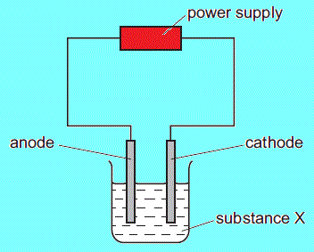

webmaster
Which element is produced at the negative electrode (cathode)?
2. The diagram shows how aluminium is manufactured by electrolysis.What are the anode and cathode made of?
| anode | cathode | |
|---|---|---|
| A | aluminium | aluminium |
| B | aluminium | graphite |
| C | graphite | aluminium |
| D | graphite | graphite |
After the student adds substance X to the water, the bulb lights. What is X?
4.At which stage in the manufacture of magnesium from sea-water can electrolysis be used?
Which line correctly describes the colours of the gases at the electrodes?
| anode (+ve) | cathode ( ve) | |
|---|---|---|
| A | colourless | colourless |
| B | colourless | yellow-green |
| C | yellow-green | colourless |
| D | yellow-green | yellow-green |
Which nickel electrodes are plated with a metal?
8.A molten compound is electrolysed. Two atoms of X are deposited at the negative electrode at the same time as three atoms of Y are deposited at the positive electrode.These results show that: X is a 1 ; Y is a 2 ; the formula of the compound is 3 .
How are gaps 1, 2 and 3 correctly completed?
| 1 | 2 | 3 | |
|---|---|---|---|
| A | metal | non-metal | X3Y2 |
| B | metal | non-metal | X2Y3 |
| C | non-metal | metal | X3Y2 |
| D | non-metal | metal | X2Y3 |
| aqueous sodium chloride | molten sodium chloride | |
|---|---|---|
| A | yes | yes |
| B | yes | no |
| C | no | yes |
| D | no | no |
What are the products at the cathodes?
12.Which change can take place during electrolysis? 13.The diagram shows apparatus for plating a copper spoon with silver.
Which statement is not correct?
14.Aqueous copper(II) sulfate solution is electrolysed using inert electrodes. Copper(II) ions (Cu2+), hydrogen ions (H+), hydroxide ions (OH ) and sulfate ions (SO42- ) are present in the solution.
To which electrodes are the ions attracted during this electrolysis?
| attracted to anode | attracted to cathode | |
|---|---|---|
| A | Cu2+ and H+ | OH and SO42- |
| B | Cu2+ and SO42- | H+ and OH |
| C | H+ and OH | Cu2+ and SO42- |
| D | OH and SO42- | Cu2+ and H+ |
The electrolytes are listed below.
cell 1: aqueous sodium chloride.
cell 2: concentrated hydrochloric acid.
cell 3: molten lead(II) bromide.
In which cells is a gas formed at both electrodes?
16.Electricity is passed through concentrated aqueous sodium chloride, as shown.
What is the test for the gas formed at the positive electrode?
17.Which statement about the electrolysis of molten lead(II) bromide is correct? 18.Winston Churchill, a British Prime Minister, had his false teeth electroplated with gold. The teeth were coated with a thin layer of carbon and were then placed in the apparatus shown.
Which row is correct?
| terminal X is | the carbon powder is | |
|---|---|---|
| A | negative | diamond |
| B | negative | graphite |
| C | positive | diamond |
| D | positive | graphite |

At which electrode is hydrogen formed?
20.The diagram shows an incomplete circuit.
Which substance causes the lamp to light when added to the glass tube?
21.The following electrolysis circuit is set up, using inert electrodes.
At which electrode is a metal deposited?
22.The diagram shows a method used to electroplate a key with copper.
Which aqueous solution is most suitable for the electrolyte?
23. Aluminium is extracted from its oxide by electrolysis.The oxide is dissolved in 1 cryolite and aluminium is deposited at the 2
| 1 | 2 | |
|---|---|---|
| A | aqueous | cathode |
| B | aqueous | anode |
| C | molten | cathode |
| D | molten | anode |
One of the metals becomes coated with copper.
Which metal becomes coated and which aqueous solution is used?
| metal | aqueous solution | |
|---|---|---|
| A | X | CrCl3 |
| B | X | CuCl2 |
| C | Y | CrCl3 |
| D | Y | CuCl2 |
What is seen at each electrode?
| electrode X | electrode Y | |
|---|---|---|
| A | brown gas | silvery metal |
| B | brown metal | green gas |
| C | green gas | brown metal |
| D | silvery metal | brown gas |
What should be shown at X when the solution has been electrolysed for some time?

Which products are shown at the correct electrodes?
| anode (+ve) | cathode ( ve) | |
|---|---|---|
| A | chlorine | hydrogen |
| B | sodium | chlorine |
| C | hydrogen | chlorine |
| D | sodium | hydrogen |
29.The diagram shows how to cause a chemical change in a molten compound.
What is this process used for?
30.A student sets up the apparatus shown. The bulb does not light.
After the student adds substance X to the water, the bulb lights.
What could X be?
31.The diagram shows apparatus used in an attempt to electroplate a metal ring with copper.
The experiment did not work.
What change is needed in the experiment to make it work?
32. When concentrated sodium chloride solution is electrolysed, elements X and Y are formed.
What are X and Y?
| X | Y | |
|---|---|---|
| A | chlorine | hydrogen |
| B | hydrogen | chlorine |
| C | hydrogen | oxygen |
| D | oxygen | hydrogen |

What is substance X?
35. Concentrated aqueous potassium bromide solution is electrolysed using inert electrodes.To which electrodes are the ions attracted during this electrolysis?
| attracted to anode | attracted to cathode | |
|---|---|---|
| A | Br- and K+ | H+ and OH- |
| B | Br- and OH- | H+ and K+ |
| C | H+ and K+ | Br- and OH- |
| D | H+ and OH- | Br- and K+ |
In what form are these salts electrolysed for liberating the metal?
| lead(II) bromide | sodium chloride | |
|---|---|---|
| A | concentrated solution | concentrated solution |
| B | concentrated solution | molten |
| C | molten | concentrated solution |
| D | molten | molten |
What is the colour of the litmus at each electrode after five minutes?
| colour at anode | colour at cathode | |
|---|---|---|
| A | blue | red |
| B | red | blue |
| C | red | colourless |
| D | colourless | blue |
Which metal is deposited at the negative electrode and why?
| metal deposited | reason | |
|---|---|---|
| A | copper | copper is less reactive than sodium |
| B | copper | copper is more reactive than hydrogen |
| C | sodium | copper is less reactive than hydrogen |
| D | sodium | copper is more reactive than sodium |
Why does the lamp light up only when the lead(II) bromide is melted?
40.Aqueous copper(II) sulfate is electrolysed using copper electrodes.Which equation represents the reaction taking place at the anode (positive electrode) in this electrolysis?
41.The diagrams show an electrolysis experiment using inert electrodes.
Which could be liquid Y?
42.Which statement about a hydrogen-oxygen fuel cell in a car is correct? 43. Fuel cells are used as energy sources in cars.| fuel in a fuel cell | products formed | |
|---|---|---|
| A | hydrogen | carbon dioxide and water |
| B | hydrogen | water only |
| C | petrol | carbon dioxide and water |
| D | petrol | water only |
| input 1 | input 2 | output 1 | output 2 | |
|---|---|---|---|---|
| A | electricity | electrolyte | hydrogen | oxygen |
| B | electricity | water | hydrogen | oxygen |
| C | fuel | hydrogen | water | electricity |
| D | fuel | oxygen | water | electricity |
| ionic half-equation | electrode | |
|---|---|---|
| A | 2O2– → O2 + 2e– | anode |
| B | Al3+ + 3e– → Al | anode |
| C | 2O2– → O2 + 4e– | cathode |
| D | Al3+ + 3e– → Al | cathode |
| positive electrode | negative electrode | |
|---|---|---|
| A | 2H+ + 2e– → H2 | 4OH– → 2H2O + O2 + 4e– |
| B | 2H+ + 2e– → H2 | 4OH– + 4H+ → 4H2O |
| C | 4OH– → 2H2O + O2 + 4e– | 2H+ + 2e– → H2 |
| D | 4OH– + 4H+ → 4H2O | 2H+ + 2e– → H2 |